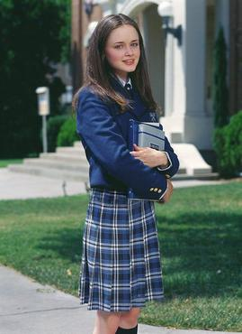
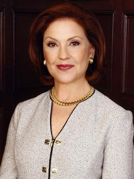

Lorelai Victoria Gilmore is a fictional character in The WB dramedy
television series Gilmore Girls. Portrayed by actress Lauren Graham,
she appeared in every episode of the show from the pilot in 2000 to
the series finale in 2007. Lorelai is introduced as a young single
mother of a teenage daughter, Rory.
Lorelai Victoria Gilmore is a fictional character in The WB dramedy
television series Gilmore Girls. Portrayed by actress Lauren Graham,
she appeared in every episode of the show from the pilot in 2000 to
the series finale in 2007. Lorelai is introduced as a young single
mother of a teenage daughter, Rory.
Lorelai Gilmore
Rory Gilmore
 Lorelai Leigh "Rory" Gilmore is a fictional character from the WB/CW television series Gilmore Girls portrayed by Alexis Bledel. She first appeared in the pilot episode of the series on October 5, 2000 and appeared in every episode until the series finale on May 15, 2007.
Luke Danes
 Luke is Stars Hollow's local diner owner. He has lived in Stars Hollow his entire life,
and his dad's hardware store (William's Hardware, in the middle of town) became his diner
after his dad passed away. While his father was heavily involved in town events,
Luke has resisted all of them, including most Town Meetings and the War Re-enactments.
Luke is Stars Hollow's local diner owner. He has lived in Stars Hollow his entire life,
and his dad's hardware store (William's Hardware, in the middle of town) became his diner
after his dad passed away. While his father was heavily involved in town events,
Luke has resisted all of them, including most Town Meetings and the War Re-enactments.
Emily Gilmore
 Emily Gilmore is a fictional character who appears in the American comedy-drama television series Gilmore Girls and its revival Gilmore Girls: A Year in the Life as the matriarch of the eponymous family.